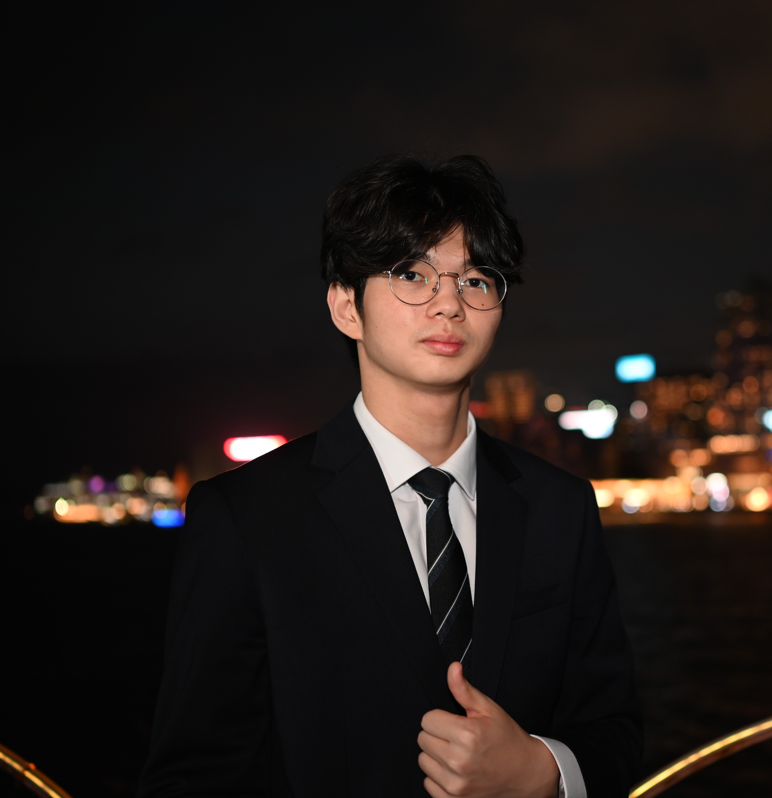

Sheet 02 · General notes
Hello — I'm Gihyun.

Add your photo asassets/profile.jpg
Fig. 1 — Victoria Harbour, Hong Kong · 2026
I'm an engineering student at the University of Hong Kong, majoring in Mechanical Engineering and pursuing the BEng X + MScEng in AI Engineering on a full scholarship. I grew up in South Korea, spent five and a half years between London and Istanbul, and now live between Hong Kong and Seoul.
As a Laidlaw Scholar, I'm researching UAV-based analysis of urban atmospheric turbulence, and in Prof. Dong-Myeong Shin's lab I work on 3D-printed triboelectric nanogenerators for wearable sensing. Outside research, I build real hardware with the HKU Robocon and HKU Racing teams — designing, machining, and assembling parts that have to survive competition.
The work I like best sits where mechanical design, electronics, and software meet: an idea becomes a CAD model, the model becomes a printed or machined part, and the part becomes something that actually moves. The moment a part finally fits is still my favourite part of engineering. I also enjoy teaching — I've founded study clubs and TA'd physics and math.
This site is organised like a drawing set: a data sheet (CV), the project drawings — with live 3D models and revision histories — and an engineering log for research notes.